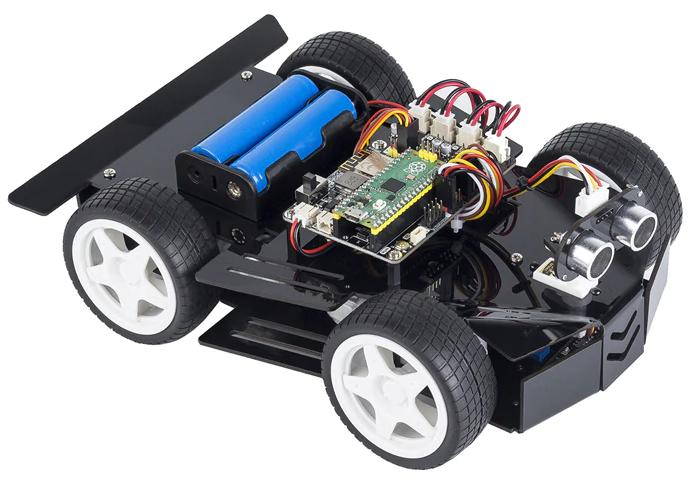

SunFounder Pico-4wd Car Kit¶
{kind=link}
The Pico-4wd is a Raspberry Pi Pico based, cool, robot car kit that everyone can have.
Equipped with greyscale sensor module and ultrasonic module, it can perform line tracking, cliff detection, follow and obstacle avoidance functions. The RGB boards assembled at the bottom and rear of the car make it the coolest spirit in the dark.
We have provided sample code based on MicroPython so you can get started quickly.
In addition, you can also use an app - SunFounder Controller - to DIY your own control methods! Let’s Play!
Here is the Email: cs@sunfounder.com.
Source Code
Or check out the code at Pico-4wd Car - GitHub
Copyright Notice¶
All contents including but not limited to texts, images, and code in this manual are owned by the SunFounder Company. You should only use it for personal study,investigation, enjoyment, or other non-commercial or nonprofit purposes, under therelated regulations and copyrights laws, without infringing the legal rights of the author and relevant right holders. For any individual or organization that uses these for commercial profit without permission, the Company reserves the right to take legal action.